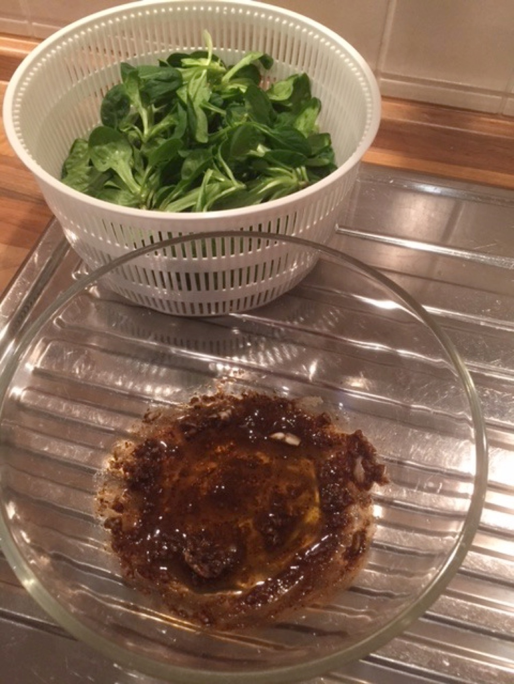
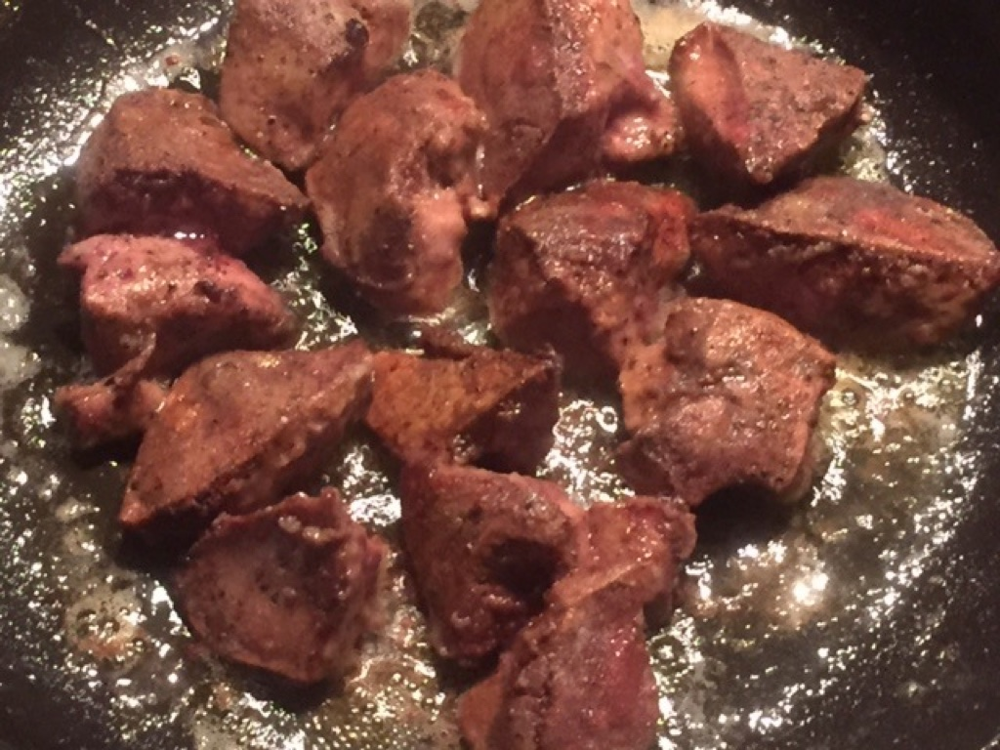

Feldsalat mit Hühnerleber in Balsamico
Steckbrief#
Selbst erfundenes Rezept für den, der Innereien mag.
Die gleiche Soße (je 1 Glas von Balsamico, Rotwein und Wasser) kann man auch zu Steaks machen. Muss ich auch mal schreiben.
Und da ist es jetzt: Steaks mit Pilzen in Balsamico.
Zutaten#
- Hühnerleber (oder wenn man die nicht bekommt, Putenleber), 200g pro Person
- 1-2 Zwiebeln in Ringe
- Knoblauch
- Mehl
- Halbes Weinglas Balsamico
- 1 -1,5 TL Zucker
- Baguette
Los geht’s#
Feldsalat mit Olivenöl – Balsamico Dressing zubereiten. Das Dressing werde ich demnächst auch noch mal veröffentlichen.

Hühnerleber oder falls nicht zu bekommen, Putenleber und etwas Mehl. Die Leber nur Pfeffern, Salz kommt nicht dran, kann man sich aber auch noch nachher dran geben. Falls es Putenleber ist in kleine Stückchen (wie hier) schneiden.
1 Zwiebel in Ringe geschnitten, Knoblauch in feine Scheiben. Olivenöl und ein halbes Weinglas Balsamico bereit stellen. Später dann die gleiche Menge Wasser dazu geben.
Leberstückchen in Mehl wälzen.
Zwiebeln nicht zu heiß anbraten.
Kurz bevor die Zwiebeln fertig sind, Knoblauch dazu. Nicht zu heiß und nicht zu lang mit dünsten. Wenn alles fertig ist aus der Pfanne raus nehmen.
Leber portionsweise nicht zu heiß anbraten sonst explodiert sie. Die Temperatur ist richtig, wenn die Explosionen gerade so vereinzelt passieren. Das Anbraten dauert so 6-8 Minuten pro Pfannenladung. Die Leber braucht nicht ganz durch sein. Fertige Stückchen rausnehmen (dünnere zu erst) und separat zu den Zwiebeln legen.

Wenn die Leber fertig ist 1-1,5TL Zucker in der heißen Pfannen karamellisieren.
Zwiebeln und Knoblauch dazu geben und kurz umrühren. Dann direkt den Balsamico dazu geben. Dampft mächtig und man muss husten. 1-2 Minuten köcheln lassen und den Pfannensatz auflösen. Die gleiche Menge Wasser dazu geben.
Die Leber dazu geben und gut umrühren. Ca. 6 Minuten langsam köcheln lassen. Evtl. etwas Wasser dazu geben.
Leber über den Salat geben, fertig.